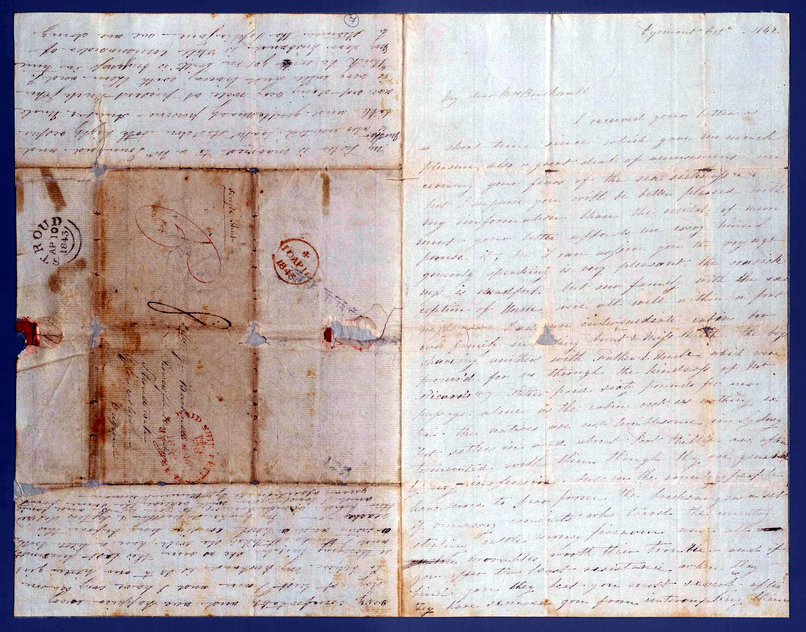

Parramatta, October 1842
Sarah had written asking about the voyage. Annie Wiseman, who had emigrated to Sydney only months before with her husband, a sea captain, wrote back and told the Bucknalls in detail and at length not to come as farmers.
The letter was postmarked Stroud on 10 April 1843. This is the most important document in the collection and the hardest to read: the ink has faded almost to the colour of the paper.
I do not think you would do well by farming, as your family is too large… you would soon run out of what little capital you began with, as you know nothing of farming
They emigrated anyway, and they farmed.
First page
In plain reading
My dear Mrs Bucknall,
I received your letter a short time since, which gave me much pleasure — also a great deal of amusement, concerning your fears of the sea sickness. But I suppose you will be better pleased with my information than the recital of merriment.
I can assure you my voyage, generally speaking, was very pleasant. The sea sickness is dreadful, but our family with the exception of myself were all well within a fortnight…
Father paid sixty pounds for our passage alone, as the cabin cost us nothing.

Second page
In plain reading
…the natives are not troublesome. In Sydney they are not settled in and about here, but in Port Phillip they are often tormented with them — though they are generally very inoffensive.
[Settlers] have more to fear from the bushrangers, a set of runaway convicts who range the country stealing cattle. And if you give them the least assistance when they find you… After they have secured you from interrupting them, they will collect what they intend taking, and then spread the table with the best your house affords and refresh themselves before your face. They generally take all your clothes, as they cannot go into any town to buy any, as they would be taken prisoners.
[Farmers] suffer great want for the want of rain. Their crops are often injured, and their cattle also, for want of water. The sinking of wells is a great deal of useless trouble and expense, as they seldom find any springs; and when they do, the water is very dark and brackish. Well water here is never used for domestic cooking use — washing only, for house cleaning, or in case of fire it is used.
Third page
In plain reading
…suffers a great deal from the heavy rains in the winter, which wash their crops and huts away. These occur often and last a fortnight, during which a large part of the country is under flood, and settlers and their families are often reduced to the greatest distress.
I do not think you would do well by farming, as your family is too large to settle in the bush. And besides, you would want a great many labourers and servants — or you would soon run out of what little capital you began with, as you know nothing of farming. The labourer you could not procure under twenty pounds a year besides their bed and board.
We all think you would do well in Port Phillip, or in any town, to follow your own business. And if you have any cash to speculate with, it would be advisable to buy land in a flourishing town such as Sydney and Melbourne and build houses. You would make a fortune in a few years.
We are living at Parramatta, on the opposite side of the water to Sydney, for the benefit of my health, and also the difference in the rent — as we have a nice little cottage here for fifteen shillings per week, for which we should have to pay thirty-four in Sydney.
The address panel
In plain reading
Mrs E. Bucknall, Stroud, Gloucestershire.
Postmarked Stroud, 10 April 1843, with two red PAID stamps.
The letter took roughly six months to reach her.
A warning about this transcript
This is the least reliable text on the site and it should not be quoted without checking. The ink has oxidised to nearly the colour of the paper, the sheet is folded in eight and stained along every fold, and parts of it are simply gone. Increasing the contrast on the image does not help — the paper fibres come up as strongly as the ink.
What is not in doubt is the substance. The advice is repeated in more than one place on the sheet, and it is unambiguous: do not farm, the family is too large, you know nothing about it, buy town land and build instead. That much can be read plainly even where individual words cannot.
The postmark date is the thing to settle. Stroud, 10 April 1843. If the Bucknalls’ ship sailed after that date, Sarah read this letter before she boarded — and went anyway.
Annie Wiseman had made the same voyage only months earlier and was writing from a rented cottage at Parramatta, taken partly for her health and partly because Sydney rents were more than twice as high. She answers Sarah’s questions in the order they were evidently asked: first the sea sickness, then the natives, then the bushrangers, then the water, then the money.
She is not discouraging emigration. She is discouraging one particular plan — a large family with no farming experience going onto the land — and offering a different one in its place: buy in town, and build.
Images reproduced from State Library Victoria. Reproduction is subject to the Library’s permission and conditions of use.